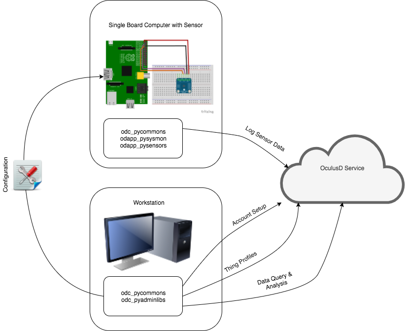

What is this all about
OculusD.com, Inc. is a company that provide a platform, services and applications aimed at the IoT and IIoT markets. In essence, this means that any "thing" connected to the Internet could use OculusD to log sensor data. At a later stage, the data can be queried, analysed and processed in ways that will help you understand or monitor your environment and perhaps even learn something new!
The overall solution consists of three parts:
- Platform - A cloud based platform where all data is aggregated
- Services - Additional value add services that will be provided by OculusD to query and analyse your data.
- Applications - The software applications (and libraries) you will need to integrate your IoT/IIoT things with OculusD
Where does what fit in

The cloud platform is where all the RESTFul API end-points are you need to integrate to. It is depicted in the diagram as the "OculusD Service".
Under most circumstances, you will manage your account(s) and things from a Workstation. This is a computer you typically have full access to and can trust as this is where your credentials and profiles will be saved within your environment (don't worry - if you loose anything, it can be re-created from data in the cloud!).
On the workstation, you will typically install several tools:
- odc_pycommons - The common Python libraries used by all Python based applications integrating to OculusD
- odc_pyadminlibs - The Python libraries required to perform administrative tasks
From the Workstation, you will also export specific configurations to be installed and/or used on your "things".
On your "thing" (a Raspberry Pi in this example, with a TMP006 Temperature Sensor), additional libraries and applications will be required to collect and send data to the OculusD Service.
On the thing, you will typically install the following tools (based on the example in the image):
- odc_pycommons - The common Python libraries used by all Python based applications integrating to OculusD
- odapp_pysysmon - Python based system monitoring (CPU, Memory, Storage and various on board sensors
- odapp_pysensors - Python based application that uses the configuration generated from the Workstation, with potentially additional libraries, to collect data from sensors and send the data to OculusD
First step
Under Construction...
Where to from here
Under Construction...
Current cloud service status and road map
In a nutshell, this project is in early start-up phase and all code and interfaces should be considered ALPHA version.
Below is a list of features, mapped to the diagram above, with the implementation status as of 2 November 2018. The unfinished items appear in no particular order.
| Feature | Implemented | Description |
|---|---|---|
| Root Account Creation | Yes | Allow new root accounts to be created |
| Roor Account Activation | Yes | Allow users to activate their new root account |
| Root Account Authentication | Yes | Authenticate against root account credentials and obtain a temporary (24 hour) period token to perform administrative functions |
| Thing Definition | Partial | Ability to define a Thing. Currently only an authenticated Root Account can define things |
| Create Thing Token | Partial | Use (only) a Root Account to create a thing token. A thing token is required by "things" to send data to the OculusD Cloud |
| Thing Log Data | Yes | Log sensor data from a Thing |
| Delete a Thing | Partial | (Only) An authenticated Root Account can currently delete a previously defined Thing |
| Modify A Thing - Add Sensors | No | Feature has not yet been implemented |
| Modify A Thing - Delete Sensors | No | Feature has not yet been implemented |
| Modify A Thing - Modify Sensors | No | Feature has not yet been implemented |
| Query thing and sensor data | No | Feature has not yet been implemented |
| Download Thing Data | No | Feature has not yet been implemented |
| Define a User | No | Feature has not yet been implemented |
| Define a Thing Group | No | Feature has not yet been implemented |
| Link User to Thing Group | No | Feature has not yet been implemented |
| Bulk Sensor Data Upload | No | Feature has not yet been implemented |
| User Maintenance - Deactivate a User | No | Feature has not yet been implemented |
| User Maintenance - Reset Credentials | No | Feature has not yet been implemented |
| Credentials Recovery - Root Account | No | Feature has not yet been implemented |
| Credentials Recovery - User Account | No | Feature has not yet been implemented |
| Create a thing configuration | No | Feature has not yet been implemented |
Current library and application status and road map
Below is a list of libraries and application, mapped to the diagram above, with the implementation status as of 2 November 2018
| Repository | Status | Language/Framework | Platform | Description |
|---|---|---|---|---|
| odc_pycommons | Version 0.0.1 available | Python 3.6+ | Any that support Python 3.6+ | Library containing common code for all other libraries and applications, for example communication routines and the data models |
| odc_pyadminlibs | Development | Python 3.6+ | Any that support Python 3.6+ | Actions to be performed by Root Account and User Accounts |
| odapp_pysysmon | Planning | Python 3.6+ | Any that support Python 3.6+ | Cross platform basic operating system monitoring application that monitor CPU, Memory, Disk and other sensor information |
| odapp_pysensors | Planning | Python 3.6+ | Any that support Python 3.6+ | Generic application that can be extended by custom code to read sensor data and submit the sensor data to the cloud |